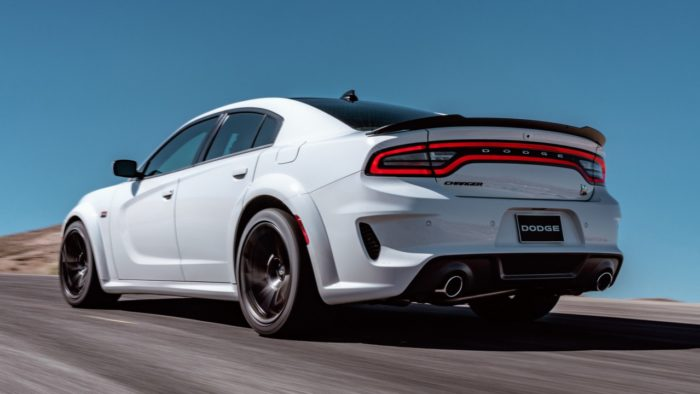
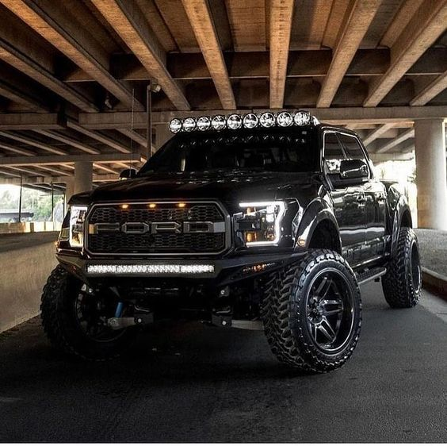
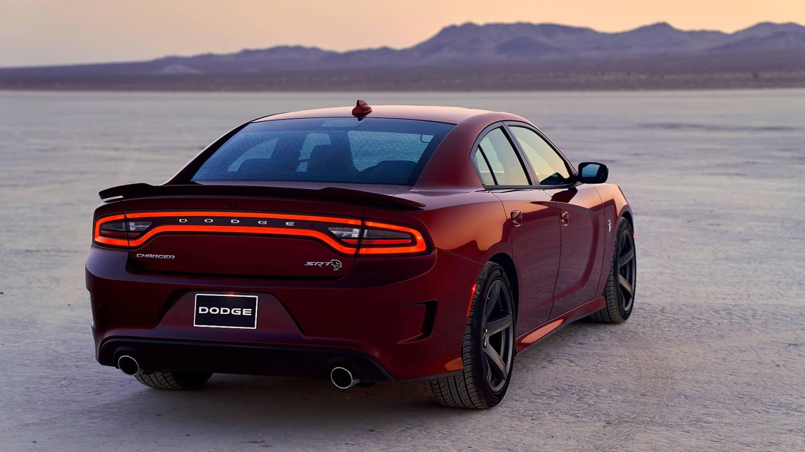

BIENVENIDOS A NUESTRO CLUB DE
Coches Restarurados
A este tipo de trabajos se les llama los "restomod". Esta palabra viene de unir: Restaurado y Modernizado.
Hay diferentes tipos de Restauraciones
La primera forma y la más cómoda
es la restauración sólo para exhibición, del cual sólo se toman detalles de
la parte externa del auto, dejando de lado los internos. Normalmente éstos
modelos van hacia museos o simplemente para la colección personal.
La segunda forma, es para el mismo uso diario: la gran mayoría de restauradores siguen
esta vía, ya que el común de la gente quiere manejar los autos que han rescatado.
La tercera forma, y la mas costosa es la restauración para la competición. Aquí todos los
componentes debe ser 100% originales, desde el motor hasta las calcomanías.
Las mejores restauraciones

CAMARO RS/SS 67
OLDSMOBILE MODELO 66
CHEVROLET 57
DATSUN 280Z 1975
FORD GALAXIE 500
CHRYSLER DART K
Como Mención Honorifica
Coches que tendrermos mis amigos y yo en el futuro

Manolo
Aldo

Mario
